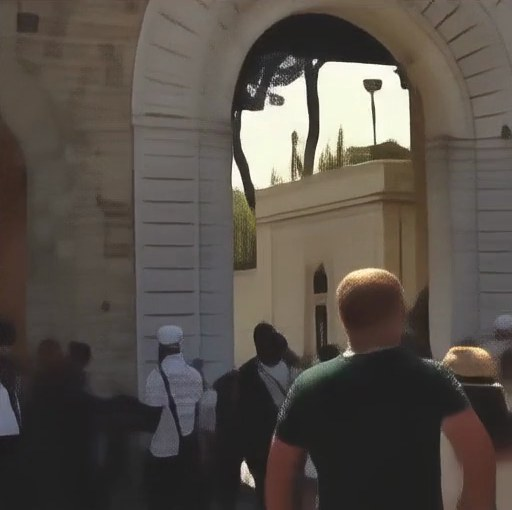

Research · Generative restoration
Edge-Conditioned Generative Restoration of Compressed Video
Can a small, separately coded stream of structure help a video diffusion model restore heavily compressed video, without sending the high-resolution frames? We send a 64×64 video plus an edge stream and restore 512×512 video at the receiver.
Problem
At very low bitrates, the decoded video keeps color, brightness, and coarse content, but object boundaries, lines, and texture are gone. A generative prior can invent detail, yet invented detail is not the same as correct detail. Edges are cheap to transmit and say where structure is. They cannot say what color or texture it has. The task is to balance four things at once: fidelity, perceptual quality, temporal consistency, and bitrate.
System
The high-resolution source is used only at the sender, to produce the low-resolution video and the edge map. The receiver never sees HR RGB. The decoded low-resolution RGB is reused by both the backbone and the adapter, but it is transmitted only once. The Sobel gradients are computed locally from the decoded edges, so they add no rate.

Adapter
The adapter is a trainable residual path attached to the frozen model, not a second super-resolution network. A multi-scale 3D convolutional encoder (full, half, and quarter resolution, temporal stride 1) turns the 6-channel condition into tokens on the backbone's grid. Trainable copies of the first 13 transformer blocks process these tokens, and each copy writes back through a zero-initialized projection with a bounded gain:
At initialization the model is exactly the unconditioned backbone, so training learns a controlled residual instead of damaging the pretrained prior. The scale s is exposed at inference time, which makes it a knob for the distortion–perception trade-off (see below).
Training and validation clips are split by source video with zero overlap. UDM10 is never used for training or model selection.
The loss is computed against the HR latent. The number of conditioned blocks grows progressively during training, and validation loss decreases steadily.
The 3D VAE, the 30-block transformer, the text encoder, and both codecs are frozen. Only the adapter path learns.
Results
Drag to compare

With edgesNo conditionLook at the arch moulding, the window frames, and the text. The unconditioned backbone produces plausible but wrong structure. With the edge stream, the lines land where they should.
Scale sweep: fidelity vs. perception
With the checkpoint, inputs, seed, and timestep fixed, we change only the adapter scale s. Scale 0 is exactly the frozen backbone.
Plausible detail, but structure drifts from the source and frames flicker more.
Edges correct the layout while the prior keeps textures natural. Perceptual metrics are best in this range.
Pixel fidelity and temporal stability keep improving, but strong residuals start adding unnatural high frequencies.
- Every non-zero scale improves pixel fidelity, structural error, and temporal consistency over the backbone.
- Perceptual quality is not monotonic in the scale. The strongest setting is not the most natural-looking one.
- No single scale wins on every metric, so the scale is reported as a control variable, not tuned away.
Open questions
- Real bytes. Rates here are codec likelihood estimates. Arithmetic-coded payloads and multi-rate rate–distortion curves are needed for a bitrate claim.
- What edges cannot carry. Canny gives contours, not texture or color, and decoded edges can break or ring. Confidence gating of unreliable edges and local LQ/edge alignment are the next ablations.
- Objective mismatch. Training uses latent MSE only, while what matters is perceptual quality. A small RGB term and a separate perceptual refinement stage are planned as single-variable ablations.
- Scale of evidence. Independent test splits, more UDM10 clips, and long-video flicker measures are needed for firm conclusions.
My role
I designed and trained the Transformer-ControlNet adapter and its multi-scale condition encoder, set up the training and validation protocol, and ran the evaluation (fidelity, perceptual, and temporal metrics, and the adapter-scale sweep).
The work builds on an existing dual-stream edge-assisted sender and its codecs, on the DOVE one-step video diffusion model as the frozen backbone, and on the ControlNet idea of zero-initialized conditional branches.